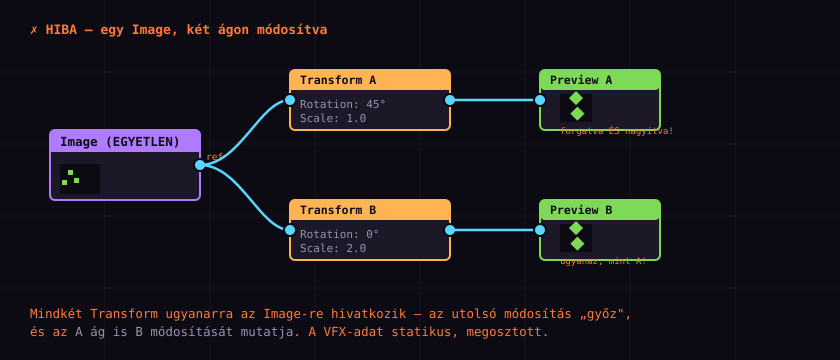
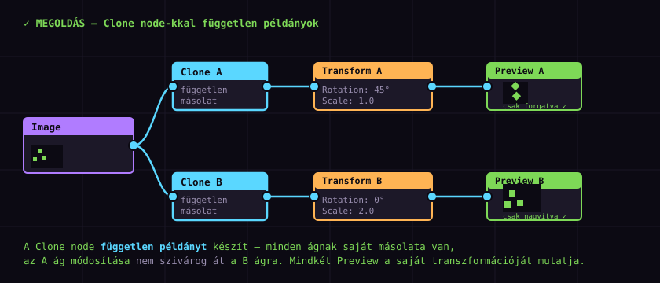

A Clone node
— a #2 kezdő csapda
Az 1–4. részben megtanultad az alapokat: gráf, Transform, Blend, animáció, export. Most jön az a probléma, amivel minden kezdő találkozik, és ami a legtöbb fejfájást okozza: „miért módosítja az egyik ág a másikat?" A válasz a statikus VFX-adat, a megoldás a Clone node. Ez a kezdő szint utolsó, legfontosabb leckéje.
Ismétlés: egy forrás, több ág
A 2. részben említettünk egy mintát: egy Image, több ágon, különböző átalakításokkal. Ott azt mondtuk, ez a PXC egyik legerősebb fegyvere — mert non-destructive, az eredeti Image érintetlen marad. Ez igaz. De van egy csapda, amit ott nem részleteztünk:
┌─▸ Transform (Rotation 45°) ─▸ Preview A
Image ───┤
└─▸ Transform (Scale 2.0) ─▸ Preview B
Ez a terv: A ág forgat, B ág nagyít. Két különböző eredményt várunk.
Ez a fejezet a csapda felismeréséről szól — mielőtt megnéznénk a megoldást, értsük meg, mi történik.
A statikus adat csapda
A probléma gyökere: a PXC-ben a Surface-adat bizonyos esetekben statikus — azaz nem másolódik, hanem megosztott referencia. Ha két node ugyanarra a Surface-re hivatkozik, és az egyik módosítja, a másik ugyanazt a módosított változatot látja.

Rotation 45°, B ág Scale 2.0 — de mivel megosztott a Surface, a B ág módosítása (Scale 2.0) is megjelenik az A ágon, és fordítva. Mindkét Preview ugyanazt mutatja: forgatva ÉS nagyítva.A statikus-adat probléma nem minden node-nál jelentkezik. A tiszta Surface-műveletek (Transform, Blend, színmódosítás) általában jól viselik. A problémásabb esetek:
- VFX / Particle node-ok — részecskék állapota „megmarad", megosztott.
- Feedback loop — előző frame-eket használ, állapot-függő.
- Rigid body / Fluid szimulációk — physics state.
- Bizonyos cache-elő node-ok, amelyek memóriában tartják az eredményt.
Az egyszerű Transform + Blend gráfoknál ritkán, de az 5. rész utáni (középhaladó) tutorialoknál — részecskéknél, feedback-nél — szinte biztosan találkozol vele.
Hogyan szivárog át? — mechanizmus
Hogy miért történik ez, érdemes megérteni — így nem csak „varázslat"-ként kezeled a Clone-t. A mechanizmus:
Image ─▸ Surface (A memóriában: #1) │ ├─▸ Transform A ▸ olvassa #1, módosítja (Rotation) │ ▸ DE: a kimenet mutathat vissza #1-re │ (ha nem készül önálló másolat) │ └─▸ Transform B ▸ szintén #1-et látja ▸ az A módosítása már „rajta" van a Surface-en ▸ ezért B is forgatva látja A PXC optimalizálási okokból nem másol feleslegesen — ez általában jó, de „egy forrás, több módosító ág" esetén a módosítások „összegyűlnek".
A Clone node — független példány
A Clone node (cián fejléc, általában a Transform/VFX kategória közelében) egy független másolatot készít a bemeneti Surface-ről. A kimenet ténylegesen külön példány a memóriában — az ágad módosításai nem hatnak vissza az eredetire, és nem szivárognak át a másik ágra.

| Clone nélkül (rossz) | Clone-nal (jó) | |
|---|---|---|
| memóriapéldány | 1 (megosztott) | 2+ (független) |
| át-szivárgás | van | nincs |
| eredmény | Mindkét Preview ugyanaz | Minden ág a saját módosítását mutatja |
| memória | kevesebb | több (de cserébe helyes) |
A Clone node-ot az Image (vagy VFX forrás) után, az ágak elágazása előtt tedd. Tehát nem „az ág végén", hanem „az ág elején". Így minden ág a saját klónjából indul ki — függetlenül. A helyes minta:
Image → Clone A → (ág A módosításai) → Preview A
Image → Clone B → (ág B módosításai) → Preview B
Mikor kell Clone? — döntés
Nem kell mindig Clone-t tenni — az egyszerű, olvasó ágaknál (ahol csak megnézed az eredményt, nem módosítod) felesleges. A Clone akkor kell, ha több ág módosít.
Több ágon használom ugyanazt a Surface-t? │ ├─ NEM (egy ág) → nincs szükség Clone-ra │ (a statikus-adat probléma nem áll fenn) │ └─ IGEN │ ├─ Csak olvasom (Preview)? → nincs szükség Clone-ra │ (Preview nem módosít, csak megjelenít) │ └─ Több ág módosít is? → ▸ KELL Clone (Transform, Blend, VFX, Particle, Feedback …) minden módosító ágra
Clone vs. új Image — melyik?
Egy gyakori kérdés: „Ha két példány kell, miért nem teszek két Image node-ot?" A válasz: az is működik, de vannak hátrányai.
| Clone node | Két Image node | |
|---|---|---|
| memória | 1 másolat | 2 teljes kép-betöltés |
| fájl-függőség | nincs (a Clone az Image-re épül) | 2 Path, 2 hely, ahol módosulhat |
| frissítés | Image cseréje → Clone-ok is frissülnek | Két helyen kell cserélni |
| gráf átláthatóság | Egy forrás, világos | Két node, könnyebb elveszteni |
| ajánlott | Igen — ez a helyes eszköz | Csak ha tényleg két különböző képed van |
Clone használata — lépésről lépésre
Most csináljuk végig a saját projekteden. Ha megvan a 2. részes projekted (Image → Transform → Preview), azt fogjuk kibővíteni két ágra, és megnézzük, hogyan orvosolja a Clone a problémát.
A) Reprodukáld a hibát először
- Nyisd meg a projektedet: egy Image → Transform → Preview gráf.
- Tegyél egy második Transform node-ot, és kösd az Image kimenetét rá is (két ág).
- A második Transform-on állíts
Scale = 2.0-t (vagy más módosítást). - Tegyél egy második Preview-t a második Transform után.
- Nézd meg: a két Preview valószínűleg hasonló (az átszivárgás miatt). Ez a hiba.
B) Tegyél Clone-t — a javítás
- Jobb-klikk → Add Node ▸ (VFX/Transform kategória) ▸ Clone.
- Kötöld az Image kimenetét a Clone bemenetére.
- A Clone kimenetét kösd az első Transform bemenetére (az eredeti Image linket leválasztva).
- Csinálj egy második Clone-t, kösd szintén az Image-re, a kimenetét a második Transform-ra.
- Nézd meg a két Preview-t — most már különbözőek: az egyik csak forgatva, a másik csak nagyítva.
Kapcsold ki/be a Clone-t — lásd, hogyan „szivárog" át a módosítás nélküle, és hogyan lesznek függetlenek vele.
Tipikus Clone-minták
A Clone nem csak „hibajavító" — tervezési mintákban is használjuk. Néhány gyakori:
| Minta | Struktúra | Mire jó |
|---|---|---|
| előtte / utána | Image → Clone A → effekt → Preview Image → Clone B → Preview (eredeti) | Összehasonlítás; Clone B nem módosít, de biztonságos. |
| több variáció | Image → Clone 1 → Transform A Image → Clone 2 → Transform B Image → Clone 3 → Transform C | Ugyanaz a sprite több variánsban (pl. 3 szín). |
| VFX + render | Particle → Clone A → VFX effekt → Preview Particle → Clone B → Blend → Preview | Részecskék ágonként más módosítása — ez a leginkább állapot-függő. |
| feedback + output | Feedback node → Clone A → Preview Feedback node → Clone B → Export | Feedback loop eredménye több célra, függetlenül. |
Ha bizonytalan vagy, tegyél Clone-t minden ágra — ez sosem ront el semmit, csak memóriát fogyaszt. A felesleges Clone-okat később eltávolíthatod. Ez különösen a részecskés/feedback-es projekteknél jó gyakorlat, ahol nehéz előre tudni, melyik ág módosít állapotot.
Hibakeresés — ha még mindig „átszivárog"
Ha Clone-t tettél, de még mindig szivárog a módosítás, ellenőrizd ezt a három dolgot:
- A Clone az Image után van-e? Ha a Clone az ág végén van (Transform után), nem segít — már „rajta" van a módosítás. A Clone az ág elején kell legyen, közvetlenül a forrás után.
- Minden módosító ágnak van Clone-ja? Ha az A ágnak van, de a B ágnak nincs, a B ág még mindig megosztott. Minden módosító ágra kell.
- Nem VFX/Particle node-forrás? Ha a forrás maga egy Particle vagy Feedback node (nem Image), a Clone még fontosabb — ezek erősen állapot-függők. Esetleg a VFX node saját „Output"-ját is klónozni kell.
A kezdő szint vége — gratulálok!
Ezzel a résszel befejezted a Pixel Composer kezdő szintet. Nézzük végig, mindazt, amit az 1–5. részben megtanultál:
| Rész | Téma | Fő tanulság |
|---|---|---|
| 1. Alapok | UI, első node, első link | Node-gráf, négy panel, Image → Preview |
| 2. Node-ok & kapcsolatok | Transform, Blend, Frame/Comment | Egy bemenet módosítása vs. több bemenet egyesítése |
| 3. Animáció | Keyframe, interpoláció, loop | Animáció = keyframe + interpoláció; Smooth a jó alapértelmezés |
| 4. Import/Export | Spritesheet, engine pipeline | Export node nem automatikus (▶ gomb); spritesheet a motor-barát |
| 5. Clone node | Statikus adat, független példány | Több módosító ág → Clone; a #2 kezdő csapda |
Ezen a ponton önállóan képes vagy:
- Felépíteni egy node-gráfot (Image → effekt → Preview).
- Transformálni és Blend-elni (több bemenet).
- Animálni keyframe-ekkel, interpolációkkal, loop-pal.
- Exportálni spritesheet-ként és betölteni egy játékmotorba.
- Megoldani a statikus-adat problémát Clone node-dal.
Ez a Pixel Composer munkafolyamatának 80%-a. A következő (középhaladó) szint már specifikus effektekre fókuszál — tűz, füst, részecskék —, de az alapok megvannak.
Csinálj egy teljes, kis projektedet az 1–5. rész alapján:
- Egy karakter sprite (Image, akár Aseprite-ból).
- Rá téve egy pulzáló glow (3. részes Opacity animáció, Blend).
- Két ágon — egyik az eredeti, másik a glow-s (Clone-nal szétválasztva!).
- Exportálva spritesheet-ként (4. rész).
- Beletöltve a választott motorodba.
Ha ez kész, készen állsz a középhaladó szintre.
Összefoglaló & merre tovább?
| Fogalom | Tanultad |
|---|---|
| statikus VFX-adat | A Surface bizonyos esetekben megosztott — módosítás átszivárog. |
| tünet | „Mindkét Preview ugyanaz" — az átszivárgás jele. |
| Clone node | Független másolatot készít — elválasztja az ágakat. |
| Clone helye | A forrás után, az ágak elágazása előtt (nem az ág végén!). |
| mikor kell | Több módosító ág → Clone; csak olvasó (Preview) ág → nem kell. |
| Clone vs. új Image | Egy forrás → Clone; több különböző forrás → több Image. |
A sorozat következő szintjei
A kezdő szint kész. A tervezett folytatás:
█ Kezdő szint — KÉSZ ✓ 1. Alapok ✓ 2. Node-ok & kapcsolatok ✓ 3. Animáció ✓ 4. Import/Export ✓ 5. Clone node ✓ ← itt vagyunk █ Középhaladó szint — tervezett 6. MK Blast — tűz & robbanás 7. Részecskék — Particle & VFX 8. Effectors — turbulence, vortex, wind 9. Feedback loop — trail & glow felhalmozás 10. Texture mapping 11. Procedurális tileset █ Haladó szint — tervezett 12. Rigid body szimuláció 13. Fluid szimuláció 14. 3D objektum renderelés 15. Batch processing / array processor 16. Bevy-integrációs lecke